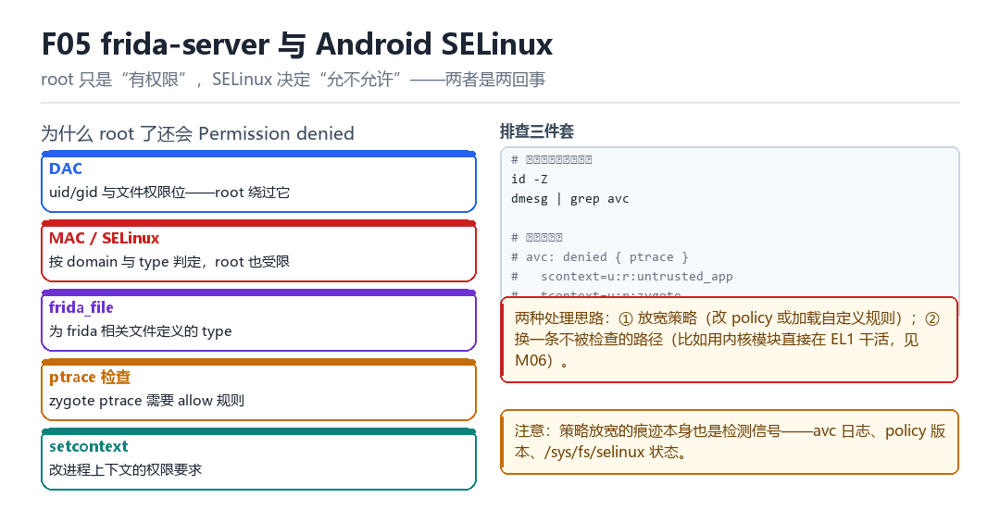

Frida server 与 Android SELinux
patch policy、frida_file、pipe socket、zygote ptrace、setcontext
root 只是“有权限”，SELinux 决定“允不允许”。
5.1 两种“拒绝”

| 机制 | 依据 | root 能否绕过 |
|---|---|---|
| DAC | uid/gid + 文件权限位 | 能 |
| MAC (SELinux) | domain × type 的策略 | 不能 |
所以“我已经 root 了为什么还是 Permission denied”这个问题的答案，永远是：你过的是 MAC 那一关，不是 DAC。
5.2 关键概念
- frida_file：为 frida 相关文件定义的 type；策略里要允许访问它。
- pipe / socket：agent 与 server 通信要用到，需要相应的 allow 规则。
- zygote ptrace：门控注入需要
allow untrusted_app zygote:process ptrace之类的规则。 - setcontext：改进程上下文（寄存器）的权限要求，注入时会用到。
id -Z # 当前域
dmesg | grep avc # 拒绝日志
# 典型：
# avc: denied { ptrace } for scontext=u:r:untrusted_app
# tcontext=u:r:zygote5.3 两条处理路线
- 放宽策略：改 sepolicy 或加载自定义规则。见效快，但策略文件的改动本身是痕迹。
- 换路径：用不被检查的方式完成同样的操作（比如内核态直接干活，见 M06）。
5.4 本章自测
- DAC 与 MAC 的区别是什么？
- frida 注入通常需要哪几类 SELinux 权限？
- 放宽策略会留下哪些痕迹？
- 除了改策略，还有什么思路？
5.5 深入：为什么 setcontext 也要权限
注入过程中要改目标的寄存器（PC、SP），这在 SELinux 里对应 process:setcontext 权限。没有这个权限，即使能 ptrace attach，也改不了现场。
| 权限 | 对应操作 | 典型拒绝 |
|---|---|---|
| ptrace | attach / read / write | avc: denied { ptrace } |
| setcontext | 改寄存器 / 恢复现场 | avc: denied { setcontext } |
| sigchld | 处理子进程信号 | 少见 |
| execute | 执行注入的代码 | avc: denied { execute } |
5.6 实战：写一条最小 allow 规则
allow untrusted_app zygote:process ptrace;
allow untrusted_app zygote:process setcontext;
allow untrusted_app frida_file:file { read open getattr };
allow untrusted_app frida_file:dir search;5.7 原理推演：为什么“root 不等于万能”
root 只是 DAC 层面的“全通行证”。SELinux 是 MAC，它不看你是谁，只看“你的域”与“目标的类型”之间有没有 allow 规则。所以 root 进程如果处在受限域里，照样被拒。
| 场景 | DAC | MAC | 结果 |
|---|---|---|---|
| root + 受限域 | 通过 | 拒绝 | 失败 |
| root + 宽域 | 通过 | 允许 | 成功 |
| 普通用户 + 允许规则 | 拒绝 | 允许 | 失败 |
这解释了为什么“root 了但 frida 还是不行”——不是 frida 有问题，是域不对。
5.8 数据细节：查看当前域
id -Z # 当前进程的 SELinux 上下文
getenforce # Enforcing / Permissive
ls -Z /data/adb # 文件的上下文5.9 深入：SELinux 的三种模式
| 模式 | 行为 | 痕迹 |
|---|---|---|
| Enforcing | 拒绝并记录 | avc denied |
| Permissive | 允许但记录 | avc denied（permissive=1） |
| Disabled | 完全不检查 | 无 |
注意中间那行：Permissive 模式不是“没有痕迹”，而是“允许了但记了一笔”。所以把系统切到 permissive 来“方便调试”，本身就是一个非常明显的信号。
5.10 深入：为什么 zygote 的 ptrace 特别难
因为 zygote 是所有 App 的父进程，权限敏感度极高。系统对它的保护是多层的：SELinux 域限制、Yama 的 ptrace_scope、以及部分厂商的额外 LSM 钩子。
| 限制层 | 内容 | 绕过难度 |
|---|---|---|
| SELinux | untrusted_app 不能 ptrace zygote | 高（需改策略） |
| Yama | 只能 attach 子进程 | 中 |
| 厂商 LSM | 自定义检查 | 视实现 |
这就是为什么“zygote 门控”类方案通常要 root：不是因为“需要 root 权限”，而是因为“需要处在能 ptrace 的域里”。
5.11 实战：确认是 SELinux 还是别的
1. getenforce # 是不是 Enforcing
2. dmesg | grep avc | tail # 有没有拒绝记录
3. setenforce 0 && 重试 # 切成 permissive 再试
# 第 3 步成功 = 确实是 SELinux 问题现场：root 已经到手，还是被拒
adb shell id 打印 uid=0(root)，ls -l /data/local/tmp/frida-server 是 -rwxrwxrwx，文件权限挑不出一点毛病。可执行起来就是 Permission denied；换成 frida -U -f 又变成Failed to attach: unable to ptrace。你重装 server、换端口、重启 adbd，折腾一小时，答案却一直躺在 dmesg 里没人看。
root 只是 DAC 那一关的通行证：uid 0 让文件权限位对你失去意义。可 SELinux 是 MAC，它不看“你是谁”，只看“你的域 × 目标的类型 × 动作”三元组有没有 allow 规则。所以排查顺序应该反过来：先看 avc 日志，再看文件权限。把一次拒绝拆开，你会发现失败点不止一处，而且每一处都在不同的规则里。
把一次拒绝拆成六拍
- frida-server（如 u:r:su 之类域）→ 对目标进程（u:r:untrusted_app）→ 发起 PTRACE_ATTACH → 结果：内核先做 DAC 检查，uid 0 / CAP_SYS_PTRACE 直接通过，第一关轻松过。
- 内核 LSM hook → 对这次 ptrace → 取出 scontext 与 tcontext → 结果：拿着两个域去 AVC 里查
allow <源域> <目标域>:process ptrace；这才是决定生死的一查。 - AVC → 对查询结果 → 未命中允许规则 → 结果：调 avc_denied，往 dmesg 写一条
avc: denied { ptrace }，并返回 -EACCES 给系统调用。 - frida-server → 对系统调用返回值 → 收到 EACCES → 结果：上层包装成
Failed to attach，而不是文件式的 Permission denied，于是很多人去查文件权限，查错方向。 - server 退而求其次 → 对自己创建的 agent 文件 / pipe → 尝试 open、mmap、connect → 结果：若文件 type 被标成 frida_file 或 app_data_file 而域没被允许，又是一串
{ read open map execute }拒绝。 - 改走 zygote 门控 → 对 zygote 域 → 需要 allow <域> zygote:process ptrace 或 setcontext 类规则 → 结果：即便 root，缺规则一样停在 specialize 之前，spawn 出来的进程永远等不到注入。
复现：把 avc 抓到手再决定改什么
不要在日志之外猜规则。下面这组命令先固定现场（域、enforce 状态、文件标签），再实时盯 avc，最后跑一次注入；把新增的拒绝条目抄下来，缺哪条规则一目了然。最关键的是最后那次二分：临时切 Permissive 再跑一遍，能立刻区分 MAC 与 DAC。
adb shell id -Z # 看自己域：u:r:su:s0 / u:r:shell:s0
adb shell getenforce # Enforcing 还是 Permissive
adb shell ls -Z /data/local/tmp/frida-server
# 实时盯拒绝日志（另开一个终端）
adb shell 'dmesg -w | grep avc'
# 起 server 并注入一次
adb shell /data/local/tmp/frida-server &
frida -U -f com.example.app -l probe.js
# 把新增拒绝捞出来
adb shell 'dmesg | grep -i avc | tail -n 20'算成功：getenforce 为 Permissive，或整个流程跑完 dmesg 没有新增 avc: denied；frida-ps -U 能列进程，probe.js 的 send 正常到达。算失败：出现 avc: denied { ptrace } ... tcontext=u:r:untrusted_app 说明缺 process/ptrace 规则；出现 { map } / { execute } 针对 frida_file 说明缺文件 type 规则；tcontext=u:r:zygote 的那条则说明你开的 zygote 门控缺单独一条 allow，只盯着 App 域排查永远找不着它。ls -Z 显示文件是 u:object_r:app_data_file:s0 而 server 域没被允许读，也是同一类。把 setenforce 0 临时切 Permissive 再跑一次，若立刻成功，就能一口咬定是 MAC 而非 DAC——这是整章最省事的一次二分。
| 操作 | 需要的 allow 形状 | 拒绝日志关键字 | 常见误区 |
|---|---|---|---|
| ptrace attach | <域> untrusted_app:process ptrace | { ptrace } | 以为 root 就够 |
| 映射 agent | <域> frida_file:file read/open/map/execute | { map } | 只盯文件权限位 |
| zygote 门控 | <域> zygote:process ptrace | tcontext=u:r:zygote | 只查目标 App 域 |
| pipe / socket 通信 | <域> <域>:fifo_file / unix_stream_socket | { write } / { connectto } | 只核对 maps |
| setcontext 改寄存器 | 对应 process 类规则 | { setcurrent } | 与 ptrace 混成一条 |
“换路径而不是改判定”这个取舍，在 KPM 部 M06 SELinux 与 FD 安全扩展 会正面展开：那里给出 avc_denied 放行与“换身份干活”两条实现路线，并逐项讨论 f_security、inode/file/socket SID 与 SO_PEERSEC 的长度 ABI 陷阱；LSPosed 部 L08 Android 14 / 16 分层适配 也会撞上同一堵墙——SELinux 规则随版本收紧，同一份注入代码在新系统上要先过域这一关，旧版本能跑不代表新版本能跑。